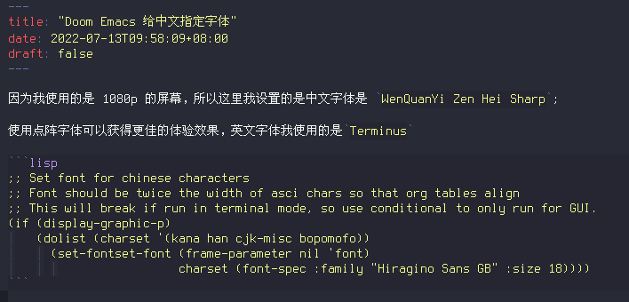

因为我使用的是 1080p 的屏幕，所以这里我设置的是中文字体是 WenQuanYi Zen Hei Sharp;
使用点阵字体可以获得更佳的体验效果，英文字体我使用的是Terminus
;; Set font for chinese characters
;; Font should be twice the width of asci chars so that org tables align
;; This will break if run in terminal mode, so use conditional to only run for GUI.
(if (display-graphic-p)
(dolist (charset '(kana han cjk-misc bopomofo))
(set-fontset-font (frame-parameter nil 'font)
charset (font-spec :family "Hiragino Sans GB" :size 18))))
预览效果:
